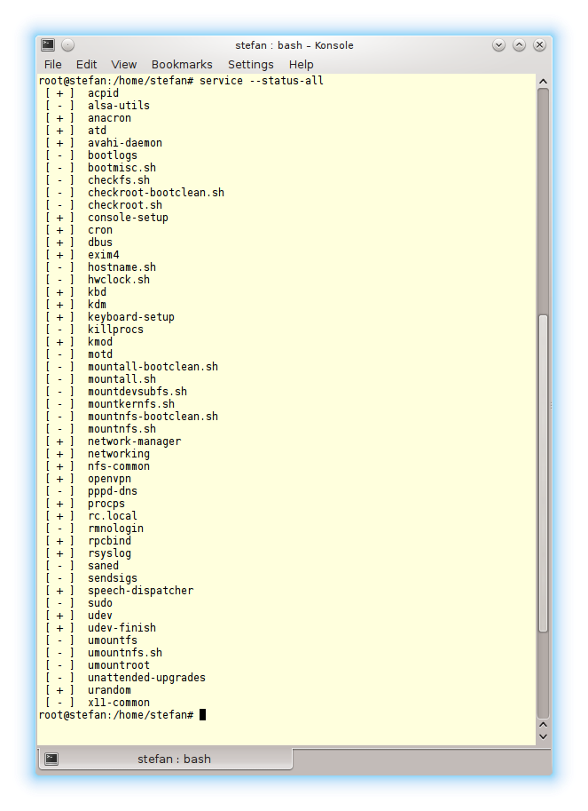

mit dem Befehl
# sudo services --status-all
lassen sich alle derzeit laufenden Dienste unter Linux anzeigen.
Ein [ + ] bedeutet hierbei, dass der Dienst aktiv ist. Ein [ - ] hingegen, dass der Dienst gestoppt wurde.

b)
Auf einem "frischen" Debiansystem ist kein bluetooth vorinstalliert. Dies kann mit
# sudo aptitude bluetooth install
nachgeholt werden. Nun kann mit
# sudo service bluetooth stop
der bluetooth-Dienst für die derzeitige Session beendet werden. Beim nächsten reboot wird der Dienst aber erneut gestartet. Mit
# sudo update-rc.d bluetooth disable
kann der bluetooth-Daemon permanent deaktiviert werden.